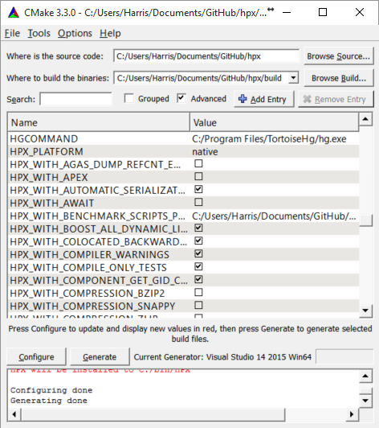
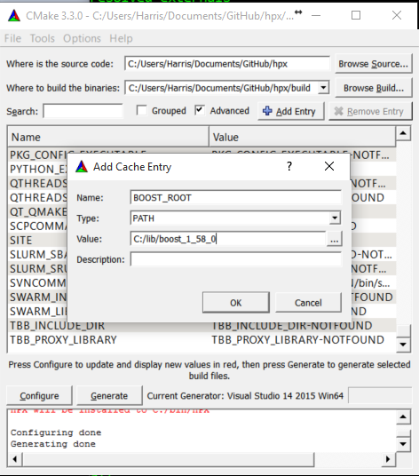
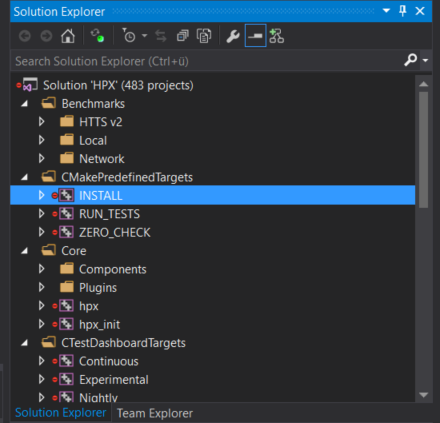
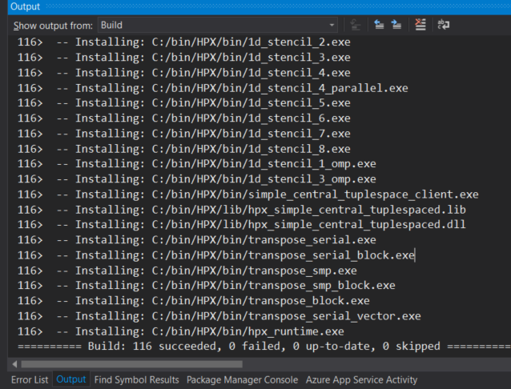

HPX build system¶
Prerequisites¶
Supported platforms¶
At this time, HPX supports the following platforms. Other platforms may work, but we do not test HPX with other platforms, so please be warned.
Name |
Minimum Version |
Architectures |
|---|---|---|
Linux |
2.6 |
x86-32, x86-64, k1om |
BlueGeneQ |
V1R2M0 |
PowerPC A2 |
Windows |
Any Windows system |
x86-32, x86-64 |
Mac OSX |
Any OSX system |
x86-64 |
Supported compilers¶
The table below shows the supported compilers for HPX.
Name |
Minimum Version |
|---|---|
7.0 |
|
7.0 |
|
Visual C++ (x64) |
2015 |
Software and libraries¶
The table below presents all the necessary prerequisites for building HPX.
Name |
Minimum Version |
|
|---|---|---|
Build System |
3.18 |
|
Required Libraries |
1.71.0 |
|
1.5 |
||
1.12.0 |
The most important dependencies are Boost and Portable Hardware Locality (HWLOC). The installation of Boost is described in detail in Boost’s Getting Started document. A recent version of hwloc is required in order to support thread pinning and NUMA awareness and can be found in Hwloc Downloads.
HPX is written in 99.99% Standard C++ (the remaining 0.01% is platform specific assembly code). As such, HPX is compilable with almost any standards compliant C++ compiler. The code base takes advantage of C++ language and standard library features when available.
Note
When building Boost using gcc, please note that it is required to specify a
cxxflags=-std=c++17 command line argument to b2 (bjam).
Note
In most configurations, HPX depends only on header-only Boost. Boost.Filesystem is required if the standard library does not support filesystem. The following are not needed by default, but are required in certain configurations: Boost.Chrono, Boost.DateTime, Boost.Log, Boost.LogSetup, Boost.Regex, and Boost.Thread.
Depending on the options you chose while building and installing HPX, you will find that HPX may depend on several other libraries such as those listed below.
Note
In order to use a high speed parcelport, we currently recommend configuring
HPX to use MPI so that MPI can be used for communication between different
localities. Please set the CMake variable MPI_CXX_COMPILER to your MPI
C++ compiler wrapper if not detected automatically.
Name |
Minimum version |
1.7.1 |
|
2.1.0 |
|
1.0.0 |
|
Performance Application Programming Interface (PAPI) |
Getting HPX¶
Download a tarball of the latest release from HPX Downloads and
unpack it or clone the repository directly using git:
$ git clone https://github.com/STEllAR-GROUP/hpx.git
It is also recommended that you check out the latest stable tag:
$ cd hpx
$ git checkout 1.7.1
Building HPX¶
Basic information¶
The build system for HPX is based on CMake, a cross-platform build-generator tool which is not responsible for building the project but rather generates the files needed by your build tool (GNU make, Visual Studio, etc.) for building HPX. If CMake is not already installed in your system, you can download it and install it here: CMake Downloads.
Once CMake has been run, the build process can be started. The HPX build process is highly configurable through CMake, and various CMake variables influence the build process. The build process consists of the following parts:
The HPX core libraries (target
core): This forms the basic set of HPX libraries.HPX Examples (target
examples): This target is enabled by default and builds all HPX examples (disable by settingHPX_WITH_EXAMPLES:BOOL=Off). HPX examples are part of thealltarget and are included in the installation if enabled.HPX Tests (target
tests): This target builds the HPX test suite and is enabled by default (disable by settingHPX_WITH_TESTS:BOOL=Off). They are not built by thealltarget and have to be built separately.HPX Documentation (target
docs): This target builds the documentation, and is not enabled by default (enable by settingHPX_WITH_DOCUMENTATION:BOOL=On. For more information see Documentation.
For a complete list of available CMake variables that influence the build of HPX, see CMake variables used to configure HPX.
The variables can be used to refine the recipes that can be found at Platform specific build recipes which show some basic steps on how to build HPX for a specific platform.
In order to use HPX, only the core libraries are required. In order to use the optional libraries, you need to specify them as link dependencies in your build (See Creating HPX projects).
As HPX is a modern C++ library which relies on C++17 by default. The use of more recent standards can be opted into explicitly. If you want to force HPX to use a specific C++ standard version, you can use the following CMake variables:
HPX_WITH_CXX17: [Deprecated] C++17 is now the default C++ standard used in HPX.HPX_WITH_CXX20: [Deprecated] In order to use the C++20 standard, it is preferable to set CMAKE_CXX_STANDARD and HPX_USE_CMAKE_CXX_STANDARD to ON.
Build types¶
CMake can be configured to generate project files suitable for builds that
have enabled debugging support or for an optimized build (without debugging
support). The CMake variable used to set the build type is
CMAKE_BUILD_TYPE (for more information see the CMake Documentation).
Available build types are:
Debug: Full debug symbols are available as well as additional assertions to help debugging. To enable the debug build type for the HPX API, the C++ Macro
HPX_DEBUGis defined.RelWithDebInfo: Release build with debugging symbols. This is most useful for profiling applications
Release: Release build. This disables assertions and enables default compiler optimizations.
RelMinSize: Release build with optimizations for small binary sizes.
Important
We currently don’t guarantee ABI compatibility between Debug and Release
builds. Please make sure that applications built against HPX use the same
build type as you used to build HPX. For CMake builds, this means that
the CMAKE_BUILD_TYPE variables have to match and for projects not using
CMake, the HPX_DEBUG macro has to be set in debug mode.
Platform specific build recipes¶
Unix variants¶
Once you have the source code and the dependencies and assuming all your dependencies are in paths known to CMake, the following gets you started:
First, set up a separate build directory to configure the project:
$ mkdir build && cd build
To configure the project you have the following options:
To build the core HPX libraries and examples, and install them to your chosen location (recommended):
$ cmake -DCMAKE_INSTALL_PREFIX=/install/path ..
Tip
If you want to change CMake variables for your build, it is usually a good idea to start with a clean build directory to avoid configuration problems. It is especially important that you use a clean build directory when changing between
ReleaseandDebugmodes.To install HPX to the default system folders, simply leave out the
CMAKE_INSTALL_PREFIXoption:
$ cmake ..If your dependencies are in custom locations, you may need to tell CMake where to find them by passing one or more options to CMake as shown below:
$ cmake -DBOOST_ROOT=/path/to/boost -DHWLOC_ROOT=/path/to/hwloc -DTCMALLOC_ROOT=/path/to/tcmalloc -DJEMALLOC_ROOT=/path/to/jemalloc [other CMake variable definitions] /path/to/source/tree
For instance:
$ cmake -DBOOST_ROOT=~/packages/boost -DHWLOC_ROOT=/packages/hwloc -DCMAKE_INSTALL_PREFIX=~/packages/hpx ~/downloads/hpx_1.5.1
If you want to try HPX without using a custom allocator pass
-DHPX_WITH_MALLOC=systemto CMake:
$ cmake -DCMAKE_INSTALL_PREFIX=/install/path -DHPX_WITH_MALLOC=system ..
Note
Please pay special attention to the section about
HPX_WITH_MALLOC:STRINGas this is crucial for getting decent performance.Important
If you are building HPX for a system with more than 64 processing units, you must change the CMake variable
HPX_WITH_MAX_CPU_COUNT(to a value at least as big as the number of (virtual) cores on your system). Note that the default value is 64.Caution
Compiling and linking HPX needs a considerable amount of memory. It is advisable that at least 2 GB of memory per parallel process is available.
Once the configuration is complete, to build the project you run:
$ cmake --build . --target install
Windows¶
Note
The following build recipes are mostly user-contributed and may be outdated. We always welcome updated and new build recipes.
To build HPX under Windows 10 x64 with Visual Studio 2015:
Download the CMake V3.18.1 installer (or latest version) from here
Download the hwloc V1.11.0 (or the latest version) from here and unpack it.
Download the latest Boost libraries from here and unpack them.
Build the Boost DLLs and LIBs by using these commands from Command Line (or PowerShell). Open CMD/PowerShell inside the Boost dir and type in:
bootstrap.bat
This batch file will set up everything needed to create a successful build. Now execute:
b2.exe link=shared variant=release,debug architecture=x86 address-model=64 threading=multi --build-type=complete install
This command will start a (very long) build of all available Boost libraries. Please, be patient.
Open CMake-GUI.exe and set up your source directory (input field ‘Where is the source code’) to the base directory of the source code you downloaded from HPX’s GitHub pages. Here’s an example of CMake path settings, which point to the
Documents/GitHub/hpxfolder:Fig. 3 Example CMake path settings.¶
Inside ‘Where is the source-code’ enter the base directory of your HPX source directory (do not enter the “src” sub-directory!). Inside ‘Where to build the binaries’ you should put in the path where all the building processes will happen. This is important because the building machinery will do an “out-of-tree” build. CMake will not touch or change the original source files in any way. Instead, it will generate Visual Studio Solution Files, which will build HPX packages out of the HPX source tree.
Set three new environment variables (in CMake, not in Windows environment):
BOOST_ROOT,HWLOC_ROOT,CMAKE_INSTALL_PREFIX. The meaning of these variables is as follows:BOOST_ROOTthe HPX root directory of the unpacked Boost headers/cpp files.HWLOC_ROOTthe HPX root directory of the unpacked Portable Hardware Locality files.CMAKE_INSTALL_PREFIXthe HPX root directory where the future builds of HPX should be installed.Note
HPX is a very large software collection, so it is not recommended to use the default
C:\Program Files\hpx. Many users may prefer to use simpler paths without whitespace, likeC:\bin\hpxorD:\bin\hpxetc.
To insert new env-vars click on “Add Entry” and then insert the name inside “Name”, select
PATHas Type and put the path-name in the “Path” text field. Repeat this for the first three variables.This is how variable insertion will look:
Fig. 4 Example CMake adding entry.¶
Alternatively, users could provide
BOOST_LIBRARYDIRinstead ofBOOST_ROOT; the difference is thatBOOST_LIBRARYDIRshould point to the subdirectory inside Boost root where all the compiled DLLs/LIBs are. For example,BOOST_LIBRARYDIRmay point to thebin.v2subdirectory under the Boost rootdir. It is important to keep the meanings of these two variables separated from each other:BOOST_DIRpoints to the ROOT folder of the Boost library.BOOST_LIBRARYDIRpoints to the subdir inside the Boost root folder where the compiled binaries are.Click the ‘Configure’ button of CMake-GUI. You will be immediately presented with a small window where you can select the C++ compiler to be used within Visual Studio. This has been tested using the latest v14 (a.k.a C++ 2015) but older versions should be sufficient too. Make sure to select the 64Bit compiler.
After the generate process has finished successfully, click the ‘Generate’ button. Now, CMake will put new VS Solution files into the BUILD folder you selected at the beginning.
Open Visual Studio and load the
HPX.slnfrom your build folder.Go to
CMakePredefinedTargetsand build theINSTALLproject:Fig. 5 Visual Studio INSTALL target.¶
It will take some time to compile everything, and in the end you should see an output similar to this one:
Fig. 6 Visual Studio build output.¶
Tests and examples¶
Running tests¶
To build the tests:
$ cmake --build . --target tests
To control which tests to run use ctest:
To run single tests, for example a test for
for_loop:
$ ctest --output-on-failure -R tests.unit.modules.algorithms.for_loop
To run a whole group of tests:
$ ctest --output-on-failure -R tests.unit
Running examples¶
To build (and install) all examples invoke:
$ cmake -DHPX_WITH_EXAMPLES=On .
$ make examples
$ make install
To build the
hello_world_1example run:
$ make hello_world_1
HPX executables end up in the bin directory in your build directory. You
can now run hello_world_1 and should see the following output:
$ ./bin/hello_world_1
Hello World!
You’ve just run an example which prints Hello World! from the HPX runtime.
The source for the example is in examples/quickstart/hello_world_1.cpp. The
hello_world_distributed example (also available in the
examples/quickstart directory) is a distributed hello world program, which is
described in Remote execution with actions. It provides a gentle introduction to
the distributed aspects of HPX.
Tip
Most build targets in HPX have two names: a simple name and
a hierarchical name corresponding to what type of example or
test the target is. If you are developing HPX it is often helpful to run
make help to get a list of available targets. For example, make help |
grep hello_world outputs the following:
... examples.quickstart.hello_world_2
... hello_world_2
... examples.quickstart.hello_world_1
... hello_world_1
... examples.quickstart.hello_world_distributed
... hello_world_distributed
It is also possible to build, for instance, all quickstart examples using make
examples.quickstart.
CMake variables used to configure HPX¶
In order to configure HPX, you can set a variety of options to allow CMake to generate your specific makefiles/project files.
Variables that influence how HPX is built¶
The options are split into these categories:
Generic options¶
-
HPX_WITH_ASYNC_CUDA:BOOL¶ ON
-
HPX_WITH_AUTOMATIC_SERIALIZATION_REGISTRATION:BOOL¶ Use automatic serialization registration for actions and functions. This affects compatibility between HPX applications compiled with different compilers (default ON)
-
HPX_WITH_BENCHMARK_SCRIPTS_PATH:PATH¶ Directory to place batch scripts in
-
HPX_WITH_BUILD_BINARY_PACKAGE:BOOL¶ Build HPX on the build infrastructure on any LINUX distribution (default: OFF).
-
HPX_WITH_CHECK_MODULE_DEPENDENCIES:BOOL¶ Verify that no modules are cross-referenced from a different module category (default: OFF)
-
HPX_WITH_COMPILER_WARNINGS:BOOL¶ Enable compiler warnings (default: ON)
-
HPX_WITH_COMPILER_WARNINGS_AS_ERRORS:BOOL¶ Turn compiler warnings into errors (default: OFF)
-
HPX_WITH_COMPRESSION_BZIP2:BOOL¶ Enable bzip2 compression for parcel data (default: OFF).
-
HPX_WITH_COMPRESSION_SNAPPY:BOOL¶ Enable snappy compression for parcel data (default: OFF).
-
HPX_WITH_COMPRESSION_ZLIB:BOOL¶ Enable zlib compression for parcel data (default: OFF).
-
HPX_WITH_COMPUTE_CUDA:BOOL¶ Enable HPX CUDA/HIP compute capability (parallel algorithms) module (default: ON, dependent on HPX_WITH_CUDA or HPX_WITH_HIP, and HPX_WITH_ASYNC_CUDA) - note: enabling this also enables CUDA/HIP futures via HPX_WITH_ASYNC_CUDA
-
HPX_WITH_CUDA:BOOL¶ Enable HPX_WITH_ASYNC_CUDA (CUDA or HIP futures) and HPX_WITH_COMPUTE_CUDA (CUDA/HIP enabled parallel algorithms) (default: OFF)
-
HPX_WITH_DATAPAR:BOOL¶ Enable data parallel algorithm support (default: ON)
-
HPX_WITH_DATAPAR_VC:BOOL¶ Enable data parallel algorithm support using the external Vc library (default: OFF)
-
HPX_WITH_DATAPAR_VC_NO_LIBRARY:BOOL¶ Don’t link with the Vc static library (default: OFF)
-
HPX_WITH_DEPRECATION_WARNINGS:BOOL¶ Enable warnings for deprecated facilities. (default: ON)
-
HPX_WITH_DISABLED_SIGNAL_EXCEPTION_HANDLERS:BOOL¶ Disables the mechanism that produces debug output for caught signals and unhandled exceptions (default: OFF)
-
HPX_WITH_DYNAMIC_HPX_MAIN:BOOL¶ Enable dynamic overload of system
main()(Linux and Apple only, default: ON)
-
HPX_WITH_FAULT_TOLERANCE:BOOL¶ Build HPX to tolerate failures of nodes, i.e. ignore errors in active communication channels (default: OFF)
-
HPX_WITH_FULL_RPATH:BOOL¶ Build and link HPX libraries and executables with full RPATHs (default: ON)
-
HPX_WITH_GCC_VERSION_CHECK:BOOL¶ Don’t ignore version reported by gcc (default: ON)
-
HPX_WITH_GENERIC_CONTEXT_COROUTINES:BOOL¶ Use Boost.Context as the underlying coroutines context switch implementation.
-
HPX_WITH_HIDDEN_VISIBILITY:BOOL¶ Use -fvisibility=hidden for builds on platforms which support it (default OFF)
-
HPX_WITH_HIP:BOOL¶ Enable compilation with HIPCC (default: OFF)
-
HPX_WITH_LOGGING:BOOL¶ Build HPX with logging enabled (default: ON).
-
HPX_WITH_MALLOC:STRING¶ Define which allocator should be linked in. Options are: system, tcmalloc, jemalloc, mimalloc, tbbmalloc, and custom (default is: tcmalloc)
-
HPX_WITH_NICE_THREADLEVEL:BOOL¶ Set HPX worker threads to have high NICE level (may impact performance) (default: OFF)
-
HPX_WITH_PARCEL_COALESCING:BOOL¶ Enable the parcel coalescing plugin (default: ON).
-
HPX_WITH_PKGCONFIG:BOOL¶ Enable generation of pkgconfig files (default: ON on Linux without CUDA/HIP, otherwise OFF)
-
HPX_WITH_PRECOMPILED_HEADERS:BOOL¶ Enable precompiled headers for certain build targets (experimental) (default OFF)
-
HPX_WITH_RUN_MAIN_EVERYWHERE:BOOL¶ Run hpx_main by default on all localities (default: OFF).
-
HPX_WITH_STACKOVERFLOW_DETECTION:BOOL¶ Enable stackoverflow detection for HPX threads/coroutines. (default: OFF, debug: ON)
-
HPX_WITH_STATIC_LINKING:BOOL¶ Compile HPX statically linked libraries (Default: OFF)
-
HPX_WITH_UNITY_BUILD:BOOL¶ Enable unity build for certain build targets (default OFF)
-
HPX_WITH_VIM_YCM:BOOL¶ Generate HPX completion file for VIM YouCompleteMe plugin
-
HPX_WITH_ZERO_COPY_SERIALIZATION_THRESHOLD:STRING¶ The threshold in bytes to when perform zero copy optimizations (default: 128)
Build Targets options¶
-
HPX_WITH_ASIO_TAG:STRING¶ Asio repository tag or branch
-
HPX_WITH_COMPILE_ONLY_TESTS:BOOL¶ Create build system support for compile time only HPX tests (default ON)
-
HPX_WITH_DISTRIBUTED_RUNTIME:BOOL¶ Enable the distributed runtime (default: ON). Turning off the distributed runtime completely disallows the creation and use of components and actions. Turning this option off is experimental!
-
HPX_WITH_DOCUMENTATION:BOOL¶ Build the HPX documentation (default OFF).
-
HPX_WITH_DOCUMENTATION_OUTPUT_FORMATS:STRING¶ List of documentation output formats to generate. Valid options are html;singlehtml;latexpdf;man. Multiple values can be separated with semicolons. (default html).
-
HPX_WITH_EXAMPLES:BOOL¶ Build the HPX examples (default ON)
-
HPX_WITH_EXAMPLES_HDF5:BOOL¶ Enable examples requiring HDF5 support (default: OFF).
-
HPX_WITH_EXAMPLES_OPENMP:BOOL¶ Enable examples requiring OpenMP support (default: OFF).
-
HPX_WITH_EXAMPLES_QT4:BOOL¶ Enable examples requiring Qt4 support (default: OFF).
-
HPX_WITH_EXAMPLES_QTHREADS:BOOL¶ Enable examples requiring QThreads support (default: OFF).
-
HPX_WITH_EXAMPLES_TBB:BOOL¶ Enable examples requiring TBB support (default: OFF).
-
HPX_WITH_EXECUTABLE_PREFIX:STRING¶ Executable prefix (default none), ‘hpx_’ useful for system install.
-
HPX_WITH_FAIL_COMPILE_TESTS:BOOL¶ Create build system support for fail compile HPX tests (default ON)
-
HPX_WITH_FETCH_ASIO:BOOL¶ Use FetchContent to fetch Asio. By default an installed Asio will be used. (default: OFF)
-
HPX_WITH_IO_COUNTERS:BOOL¶ Enable IO counters (default: ON)
-
HPX_WITH_TESTS:BOOL¶ Build the HPX tests (default ON)
-
HPX_WITH_TESTS_BENCHMARKS:BOOL¶ Build HPX benchmark tests (default: ON)
-
HPX_WITH_TESTS_EXAMPLES:BOOL¶ Add HPX examples as tests (default: ON)
-
HPX_WITH_TESTS_EXTERNAL_BUILD:BOOL¶ Build external cmake build tests (default: ON)
-
HPX_WITH_TESTS_HEADERS:BOOL¶ Build HPX header tests (default: OFF)
-
HPX_WITH_TESTS_REGRESSIONS:BOOL¶ Build HPX regression tests (default: ON)
-
HPX_WITH_TESTS_UNIT:BOOL¶ Build HPX unit tests (default: ON)
-
HPX_WITH_TOOLS:BOOL¶ Build HPX tools (default: OFF)
Thread Manager options¶
-
HPX_COROUTINES_WITH_SWAP_CONTEXT_EMULATION:BOOL¶ Emulate SwapContext API for coroutines (Windows only, default: OFF)
-
HPX_WITH_COROUTINE_COUNTERS:BOOL¶ Enable keeping track of coroutine creation and rebind counts (default: OFF)
-
HPX_WITH_IO_POOL:BOOL¶ Disable internal IO thread pool, do not change if not absolutely necessary (default: ON)
-
HPX_WITH_MAX_CPU_COUNT:STRING¶ HPX applications will not use more that this number of OS-Threads (empty string means dynamic) (default: 64)
-
HPX_WITH_MAX_NUMA_DOMAIN_COUNT:STRING¶ HPX applications will not run on machines with more NUMA domains (default: 8)
-
HPX_WITH_SCHEDULER_LOCAL_STORAGE:BOOL¶ Enable scheduler local storage for all HPX schedulers (default: OFF)
-
HPX_WITH_SPINLOCK_DEADLOCK_DETECTION:BOOL¶ Enable spinlock deadlock detection (default: OFF)
-
HPX_WITH_SPINLOCK_POOL_NUM:STRING¶ Number of elements a spinlock pool manages (default: 128)
-
HPX_WITH_STACKTRACES:BOOL¶ Attach backtraces to HPX exceptions (default: ON)
-
HPX_WITH_STACKTRACES_DEMANGLE_SYMBOLS:BOOL¶ Thread stack back trace symbols will be demangled (default: ON)
-
HPX_WITH_STACKTRACES_STATIC_SYMBOLS:BOOL¶ Thread stack back trace will resolve static symbols (default: OFF)
-
HPX_WITH_THREAD_BACKTRACE_DEPTH:STRING¶ Thread stack back trace depth being captured (default: 20)
-
HPX_WITH_THREAD_BACKTRACE_ON_SUSPENSION:BOOL¶ Enable thread stack back trace being captured on suspension (default: OFF)
-
HPX_WITH_THREAD_CREATION_AND_CLEANUP_RATES:BOOL¶ Enable measuring thread creation and cleanup times (default: OFF)
-
HPX_WITH_THREAD_CUMULATIVE_COUNTS:BOOL¶ Enable keeping track of cumulative thread counts in the schedulers (default: ON)
-
HPX_WITH_THREAD_IDLE_RATES:BOOL¶ Enable measuring the percentage of overhead times spent in the scheduler (default: OFF)
-
HPX_WITH_THREAD_LOCAL_STORAGE:BOOL¶ Enable thread local storage for all HPX threads (default: OFF)
-
HPX_WITH_THREAD_MANAGER_IDLE_BACKOFF:BOOL¶ HPX scheduler threads do exponential backoff on idle queues (default: ON)
-
HPX_WITH_THREAD_QUEUE_WAITTIME:BOOL¶ Enable collecting queue wait times for threads (default: OFF)
-
HPX_WITH_THREAD_STACK_MMAP:BOOL¶ Use mmap for stack allocation on appropriate platforms
-
HPX_WITH_THREAD_STEALING_COUNTS:BOOL¶ Enable keeping track of counts of thread stealing incidents in the schedulers (default: OFF)
-
HPX_WITH_THREAD_TARGET_ADDRESS:BOOL¶ Enable storing target address in thread for NUMA awareness (default: OFF)
-
HPX_WITH_TIMER_POOL:BOOL¶ Disable internal timer thread pool, do not change if not absolutely necessary (default: ON)
AGAS options¶
-
HPX_WITH_AGAS_DUMP_REFCNT_ENTRIES:BOOL¶ Enable dumps of the AGAS refcnt tables to logs (default: OFF)
Parcelport options¶
-
HPX_WITH_NETWORKING:BOOL¶ Enable support for networking and multi-node runs (default: ON)
-
HPX_WITH_PARCELPORT_ACTION_COUNTERS:BOOL¶ Enable performance counters reporting parcelport statistics on a per-action basis.
-
HPX_WITH_PARCELPORT_LIBFABRIC:BOOL¶ Enable the libfabric based parcelport. This is currently an experimental feature
-
HPX_WITH_PARCELPORT_MPI:BOOL¶ Enable the MPI based parcelport.
-
HPX_WITH_PARCELPORT_TCP:BOOL¶ Enable the TCP based parcelport.
-
HPX_WITH_PARCEL_PROFILING:BOOL¶ Enable profiling data for parcels
Profiling options¶
-
HPX_WITH_APEX:BOOL¶ Enable APEX instrumentation support.
-
HPX_WITH_ITTNOTIFY:BOOL¶ Enable Amplifier (ITT) instrumentation support.
-
HPX_WITH_PAPI:BOOL¶ Enable the PAPI based performance counter.
Debugging options¶
-
HPX_WITH_ATTACH_DEBUGGER_ON_TEST_FAILURE:BOOL¶ Break the debugger if a test has failed (default: OFF)
-
HPX_WITH_PARALLEL_TESTS_BIND_NONE:BOOL¶ Pass –hpx:bind=none to tests that may run in parallel (cmake -j flag) (default: OFF)
-
HPX_WITH_SANITIZERS:BOOL¶ Configure with sanitizer instrumentation support.
-
HPX_WITH_TESTS_DEBUG_LOG:BOOL¶ Turn on debug logs (–hpx:debug-hpx-log) for tests (default: OFF)
-
HPX_WITH_TESTS_DEBUG_LOG_DESTINATION:STRING¶ Destination for test debug logs (default: cout)
-
HPX_WITH_TESTS_MAX_THREADS_PER_LOCALITY:STRING¶ Maximum number of threads to use for tests (default: 0, use the number of threads specified by the test)
-
HPX_WITH_THREAD_DEBUG_INFO:BOOL¶ Enable thread debugging information (default: OFF, implicitly enabled in debug builds)
-
HPX_WITH_THREAD_DESCRIPTION_FULL:BOOL¶ Use function address for thread description (default: OFF)
-
HPX_WITH_THREAD_GUARD_PAGE:BOOL¶ Enable thread guard page (default: ON)
-
HPX_WITH_VALGRIND:BOOL¶ Enable Valgrind instrumentation support.
-
HPX_WITH_VERIFY_LOCKS:BOOL¶ Enable lock verification code (default: OFF, implicitly enabled in debug builds)
-
HPX_WITH_VERIFY_LOCKS_BACKTRACE:BOOL¶ Enable thread stack back trace being captured on lock registration (to be used in combination with HPX_WITH_VERIFY_LOCKS=ON, default: OFF)
-
HPX_WITH_VERIFY_LOCKS_GLOBALLY:BOOL¶ Enable global lock verification code (default: OFF, implicitly enabled in debug builds)
Modules options¶
HPX_ITERATOR_SUPPORT_WITH_BOOST_ITERATOR_TRAVERSAL_TAG_COMPATIBILITY:BOOLHPX_SERIALIZATION_WITH_ALL_TYPES_ARE_BITWISE_SERIALIZABLE:BOOL
-
HPX_DATASTRUCTURES_WITH_ADAPT_STD_TUPLE:BOOL¶ Enable compatibility of hpx::tuple with std::tuple. (default: ON)
-
HPX_FILESYSTEM_WITH_BOOST_FILESYSTEM_COMPATIBILITY:BOOL¶ Enable Boost.FileSystem compatibility. (default: OFF)
-
HPX_ITERATOR_SUPPORT_WITH_BOOST_ITERATOR_TRAVERSAL_TAG_COMPATIBILITY:BOOL¶ Enable Boost.Iterator traversal tag compatibility. (default: OFF)
-
HPX_SERIALIZATION_WITH_ALLOW_CONST_TUPLE_MEMBERS:BOOL¶ Enable serializing std::tuple with const members. (default: OFF)
-
HPX_SERIALIZATION_WITH_ALLOW_RAW_POINTER_SERIALIZATION:BOOL¶ Enable serializing raw pointers. (default: OFF)
-
HPX_SERIALIZATION_WITH_ALL_TYPES_ARE_BITWISE_SERIALIZABLE:BOOL¶ Assume all types are bitwise serializable. (default: OFF)
-
HPX_SERIALIZATION_WITH_BOOST_TYPES:BOOL¶ Enable serialization of certain Boost types. (default: ON)
-
HPX_TOPOLOGY_WITH_ADDITIONAL_HWLOC_TESTING:BOOL¶ Enable HWLOC filtering that makes it report no cores, this is purely an
option supporting better testing - do not enable under normal circumstances. (default: OFF)
Additional tools and libraries used by HPX¶
Here is a list of additional libraries and tools that are either optionally supported by the build system or are optionally required for certain examples or tests. These libraries and tools can be detected by the HPX build system.
Each of the tools or libraries listed here will be automatically detected if
they are installed in some standard location. If a tool or library is installed
in a different location, you can specify its base directory by appending
_ROOT to the variable name as listed below. For instance, to configure a
custom directory for BOOST, specify BOOST_ROOT=/custom/boost/root.
-
BOOST_ROOT:PATH¶ Specifies where to look for the Boost installation to be used for compiling HPX. Set this if CMake is not able to locate a suitable version of Boost. The directory specified here can be either the root of an installed Boost distribution or the directory where you unpacked and built Boost without installing it (with staged libraries).
-
HWLOC_ROOT:PATH¶ Specifies where to look for the hwloc library. Set this if CMake is not able to locate a suitable version of hwloc. Hwloc provides platform- independent support for extracting information about the used hardware architecture (number of cores, number of NUMA domains, hyperthreading, etc.). HPX utilizes this information if available.
-
PAPI_ROOT:PATH¶ Specifies where to look for the PAPI library. The PAPI library is needed to compile a special component exposing PAPI hardware events and counters as HPX performance counters. This is not available on the Windows platform.
-
AMPLIFIER_ROOT:PATH¶ Specifies where to look for one of the tools of the Intel Parallel Studio product, either Intel Amplifier or Intel Inspector. This should be set if the CMake variable
HPX_USE_ITT_NOTIFYis set toON. Enabling ITT support in HPX will integrate any application with the mentioned Intel tools, which customizes the generated information for your application and improves the generated diagnostics.
In addition, some of the examples may need the following variables:
-
HDF5_ROOT:PATH¶ Specifies where to look for the Hierarchical Data Format V5 (HDF5) include files and libraries.